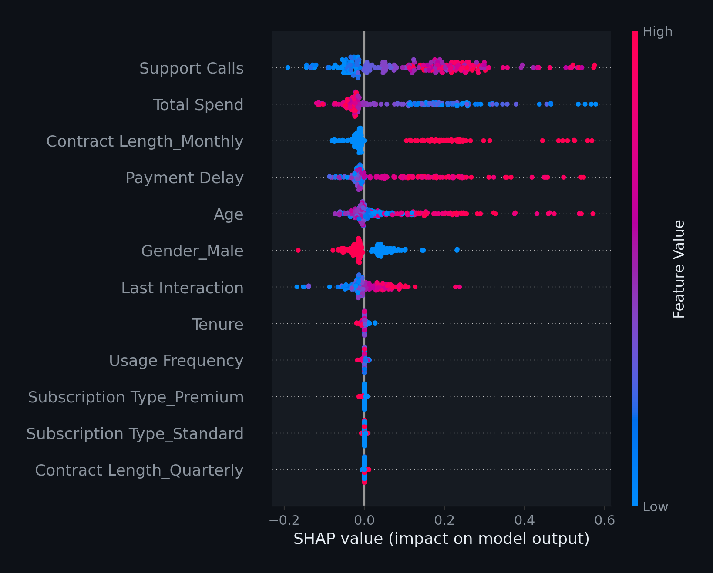

Customer Churn Prediction
High-Performance Shallow Neural Network
Hard Joshi · Jayrup Nakawala · Yogi Patel
2026-05-01
Project Objective
- Minimize customer churn via predictive modeling
- Analyze 505,000+ customer records
- Implement custom Neural Network (Pure NumPy)
- Prioritize high interpretability for business use
Dataset Overview
- Churned: 56.7%
- Retained: 43.3%
- Listwise deletion for missing data
- Cleaned sample: 505,206 records
Preprocessing & Encoding
- One-Hot Encoding: Nominal categories
- Standard Scaling: Normalised features
- No PCA: Preserving raw signal
- Gender (Binary)
- Contract Length (Nominal)
- Subscription Type (Nominal)
The Distribution Shift Fix
Initial Challenge:
Validation F1 (0.98) vs. Test F1 (0.66) indicated a severe mismatch between original data files.
- Strategy: Merge train and test into one global pool
- Execution: Stratified re-partitioning (65% / 20% / 15%)
- Result: Consistent distribution across all evaluation sets
Neural Network Architecture
12 Input Features
64 Hidden Neurons
1 Output Node
Pure NumPy Engine
Tanh / Sigmoid
Adam Optimiser
Systematic Grid Search
- 27 combinations tested
- 5-Fold Stratified CV
- Best Config:
Optimized Business Strategy
- Default Threshold: 0.50
- Optimized Threshold: 0.28
- Strategy: Prioritize Recall over Precision
“It is cheaper to retain a loyal customer than to lose a churner.”
Error Analysis
Primary Churn Drivers
- Support Calls
- Contract Length
- Total Spend
- Age
SHAP Global Analysis

Actionable Recommendations
- High Intensity Support: Flags for customers >5 calls
- Contract Migration: Incentivize Annual upgrades
- Usage Monitoring: Track spend decline as early warning
Project Conclusion
- Robust: 0.928 F1-Score on unseen data
- Interpretable: Clear drivers (Support, Spend, Contract)
- Transparent: Custom NumPy implementation
- Business Ready: Optimized for proactive retention
Thank You
Hard Joshi
Jayrup Nakawala
Yogi Patel
CN6021 Advanced Topics in AI